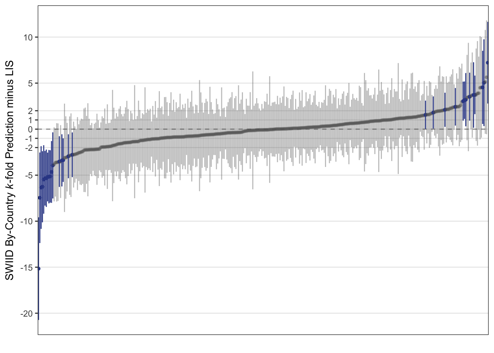

Using Cross-Validation to Evaluate the Comparability of the SWIID’s Estimates
note
r
swiid
From its origins now over ten years ago, the goal of the Standardized World Income Inequality Database has been to provide estimates of income inequality for as many countries and years as possible…
From its origins now over ten years ago, the goal of the Standardized World Income Inequality Database has been to provide estimates of income inequality for as many countries and years as possible while ensuring that these estimates are as comparable as the available data allow. That is to say, the SWIID’s first priority is breadth of coverage, and its second is comparability. The starting point for the SWIID estimates is a dataset with the complementary priorities: the Luxembourg Income Study, which aims to maximize comparability and, given that primary concern, to include as many countries and years as possible.1 Then the SWIID routine estimates the relationships between Gini indices based on the LIS and all of the other Ginis available for the same country-years, and it uses these relationships to estimate what the LIS Gini would be in country-years not included in the LIS but available from other sources.
How can we know if the SWIID’s approach works? In previous work, I provided the most stringent test I could come up with:2 I examined LIS data on country-years that had been included in previously-released versions of the SWIID. The results were reassuring in some ways–only seven percent of the differences between new LIS and old SWIID observations were statistically significant and larger than two Gini points, a far better record than that achieved by data carefully selected from the UNU-WIDER database or the All the Ginis dataset adjusted in accordance with its instructions–but less so in others. Most disappointingly, only 72% of the differences had 95% confidence intervals that included zero, suggesting that the SWIID’s standard errors were often too small. I’ve been working hard on the SWIID’s estimation routine to fix these issues since I conducted that test back in 2014, but the LIS doesn’t release new data frequently enough to allow for continuous testing of these revisions. So, instead, I’ve drawn on a technique developed in data science and machine learning, k-fold cross-validation, to assess the SWIID’s progress.
To get how k-fold cross-validation works, it helps to first understand the simpler form of cross-validation in which the available data are first divided into two groups of observations: the training set and the testing set. The model parameters are then estimated on only the training set. Finally, these results are used to predict the values of the testing set (that is, again, observations that were not used to estimate the model’s parameters). By comparing the model’s predictions against the test set, we avoid overfitting and get a good sense of how well the model performs in predicting other, as yet unknown, data.
Still, that sense may be biased by the exact observations that happened to be assigned to each set. We can reduce this bias by performing the process repeatedly: this is k-fold cross-validation. The available data are divided into some number k groups. One at a time, each of the k groups is treated as the testing data, with all other groups forming the training data for estimating the model. The model’s performance is then evaluated by considering how well it predicts all of the groups, and because every observation is included in the testing data at some point, the process allows us to check whether and for which observations the model is doing particularly poorly.
To provide a first assessment of the SWIID’s ability to predict the LIS, I randomly assigned the available LIS observations into groups of three, with an added check to ensure that no group included two observations from the same country.3 (Because the SWIID routine relies only on relationships observed within-country for the countries included in the LIS, the check that only a single observation from a country be assigned to the test data at a time means that the exact size of the group doesn’t really matter.)4 The figure below plots the difference between the SWIID prediction generated from this k-fold cross-validation and the LIS data for each country-year included in the LIS. Observations for which the 95% credible interval for this difference includes zero are gray; those for which it doesn’t are highlighted in blue.
The results show that the SWIID does a very good job of predicting the LIS: the 95% credible interval for the difference between the two includes zero for 92% of these observations. The point estimates for these differences are generally small, with 85% less than 2 Gini points and 62% less than a single Gini point. It’s true that there are a few observations for which the estimated difference is quite large–on the far left of the plot, the SWIID routine underestimated the LIS Gini for Hungary in 1991 by 6 \(\pm\) 4 points, and on the extreme right the SWIID routine overestimated that for Guatemala in 2014 by 7 \(\pm\) 4 points–but there doesn’t really seem to me to be much pattern in which countries and years are estimated poorly.
This test, though, really only assesses how well the SWIID predicts LIS-comparable inequality figures in years without LIS data in the (now fifty) countries that are included in the LIS. We can get a better sense of how well the SWIID does predicting countries not covered by the LIS with another cross-validation that, one country at a time, excludes all of the LIS observations for that country. The results of just such a test are plotted below.

Overall, the plot looks very similar to the one above. With each country’s entire run of LIS data taking a turn being excluded, the 95% credible interval for the difference between the resulting SWIID estimate and the excluded LIS data contains zero 91% of the time. And here, too, most of the point estimates for these differences are small: 76% are less than 2 Gini points, and 51% are less than one Gini point.
This analysis, though, does point to a few rough spots in need of future attention. The first appears on the far left of the plot above. There we find that the largest difference is for the sole country-year for Egypt in the LIS–for 2012–which the SWIID routine underestimates by 16(!) \(\pm\) 6 Gini points. Egypt is currently the only country in the LIS with just a single country-year observation; given that excluding the one observation is equivalent to excluding all of the country’s observations, I skipped omitting it in the first cross-validation. LIS researchers Checchi et al. report in a footnote that Egyptian income surveys before 2012 did not include any questions to capture self-employment income, and it’s also true that most of the available Ginis for Egypt are based on the distribution of consumption expenditure, which sometimes only loosely track those for the distribution of income (see, e.g., India). These factors, however, are present in many non-LIS countries as well, so I’ll continue working to come up with ways to improve the SWIID routine for such cases.
The second is that there are two other countries for which the 95% credible interval for the differences between the LIS data and the SWIID routine’s estimates for those countries when all of their LIS data are excluded does not contain zero in any of the country’s observations: Brazil and Peru. For Brazil, the cross-validation’s estimates of the country’s four LIS observations are all too high—by 2.5 \(\pm\) 2.0 Gini points to 3.7 \(\pm\) 2.1 Gini points. The cross-validation’s estimates for Peru’s four LIS observations, on the other hand, are all too low—by between 5.0 \(\pm\) 2.9 and 5.4 \(\pm\) 3.0 Gini points. So there is some room for improvement here too, and I’ll keep working on it also.
All in all, though, these k-fold cross-validation exercises show that the SWIID does a very good job of predicting the LIS, which inspires confidence that the SWIID is indeed maximizing the comparability of income inequality data across countries and over time.
References
Checchi, Daniele, Andrej Cupak, Teresa Munzi, and Janet Gornick. 2018. “Empirical Challenges Comparing Inequality Across Countries: The Case of Middle-Income Countries from the LIS Database.” WIDER Working Paper 2018/149.
Solt, Frederick. 2016. “The Standardized World Income Inequality Database.” Social Science Quarterly 97(5): 1267–81.
Footnotes
Still, even for the LIS perfect comparability has given way to the desire to cover more middle-income countries. Teresa Munzi and Andrej Cupak recently wrote about the difficulties the LIS team encountered including middle-income countries due to the greater importance of non-monetary and self-employment income as well as the differences in direct taxation and social security contributions in these countries in comparison to high-income countries. Despite these issues, the LIS remains the most comparable income inequality data available.↩︎
For the initial kernel of this idea, I remain grateful to participants in the Expert Group Meeting on Reducing Inequalities in the Context of Sustainable Development, Department of Economic and Social Affairs, United Nations, New York, October 24–25, 2013.↩︎
The goal of this exercise is really to assess how well the SWIID works within the LIS countries, so Egypt 2012, the only LIS observation for that country, is excluded from the analysis. This is because holding out that observation makes Egypt a non-LIS country. What happens when the SWIID is used to predict all of a country’s LIS observations at once is discussed below.↩︎
My experiments with groups sized from just one observation each up to six observations each confirmed this. Three observations per group struck a nice balance between the time it takes to randomly generate the groups (which increases with group size because it becomes more likely for a group to be rejected for containing two observations from a single country) and the demand the work puts on UI’s high performance computing cluster (which increases with the number of groups–which is also the number of times the SWIID routine is re-run). I probably don’t really need to worry about the latter, but whatever—like I said, it doesn’t actually matter.↩︎